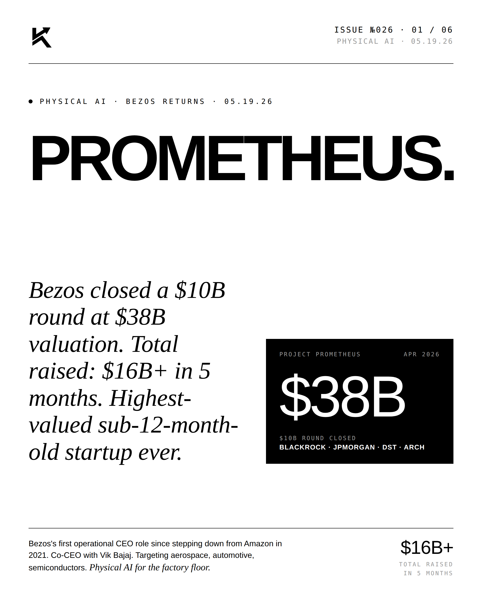
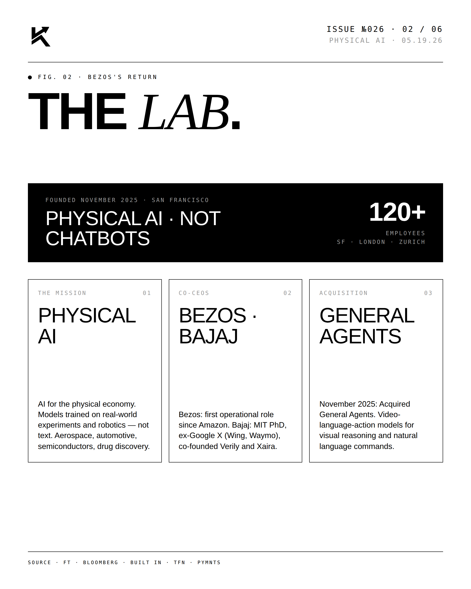
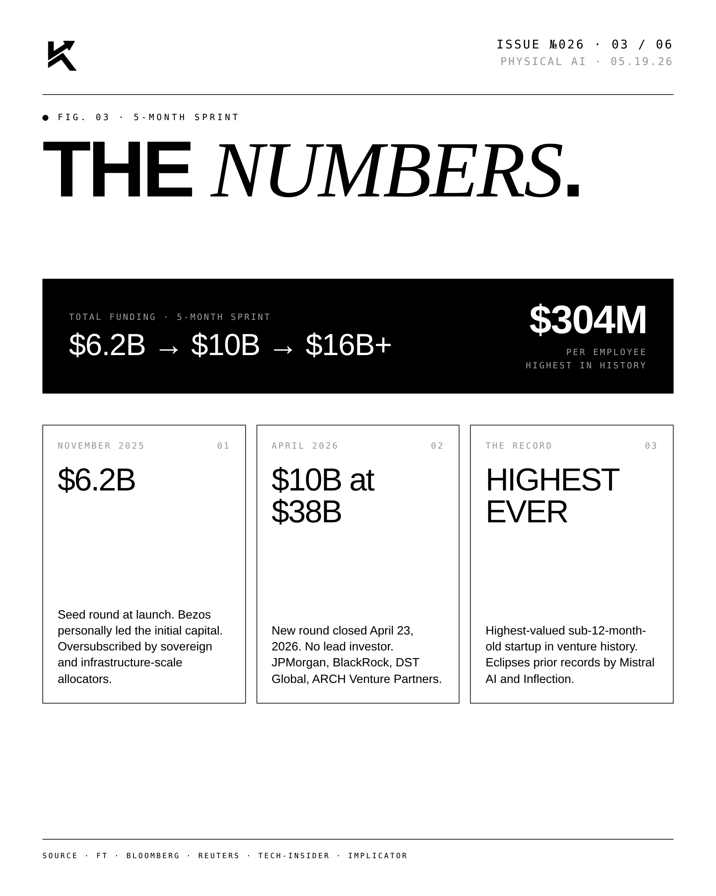
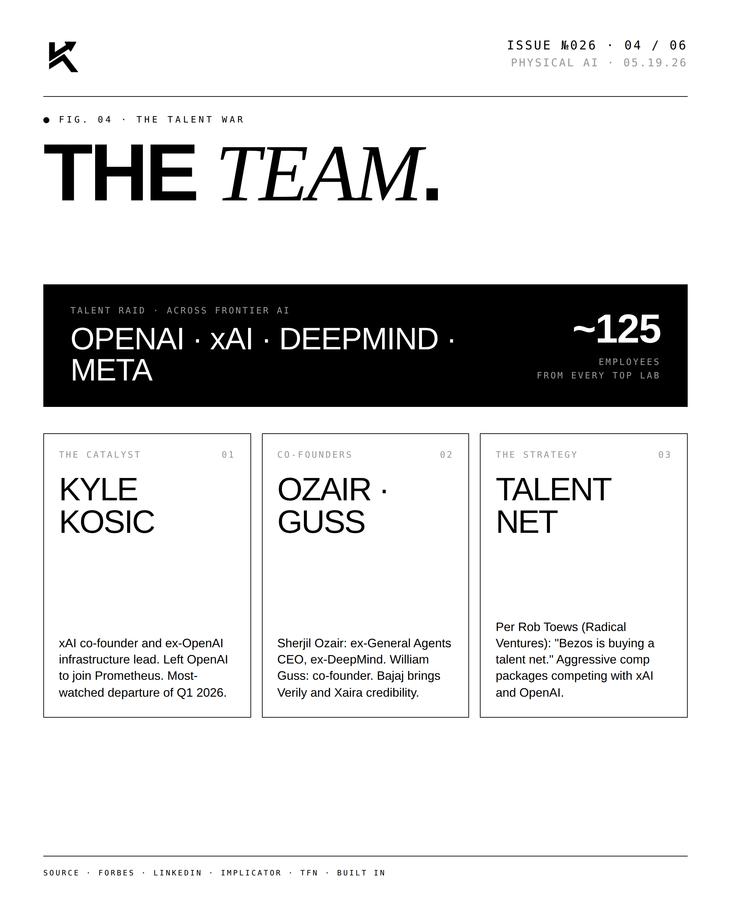
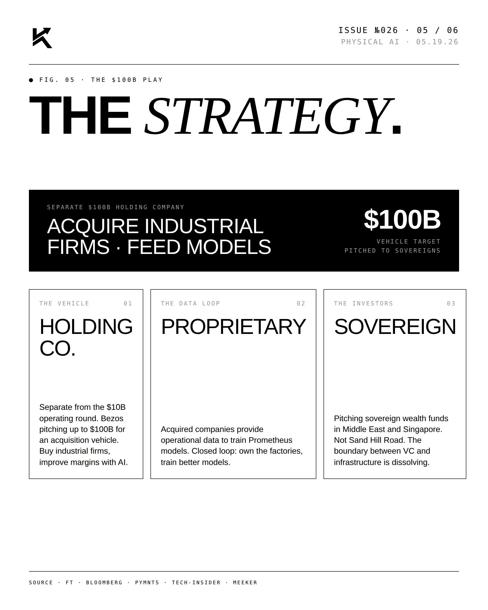
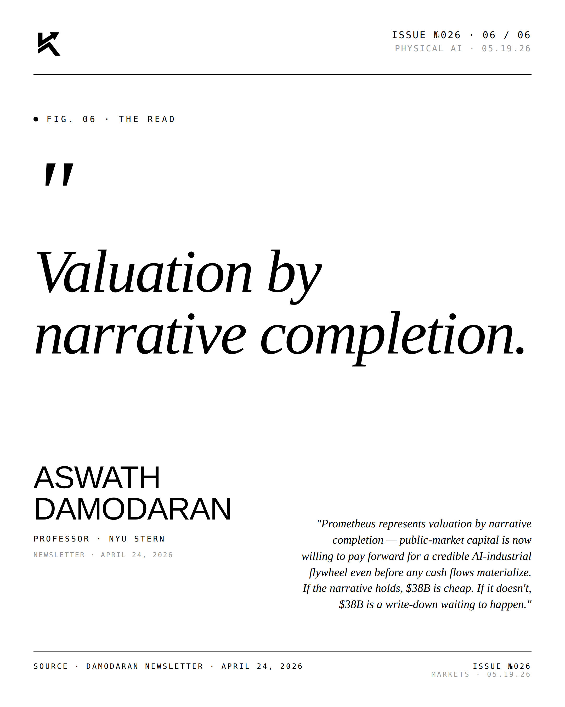

Prometheus.
Jeff Bezos closed a $10B round at a $38B valuation for Project Prometheus — total raised $16B+ in five months, the highest-valued sub-12-month-old startup ever. His first operational CEO role since Amazon.

The Lead.
Bezos returns to an operating seat as co-CEO alongside Vik Bajaj, targeting aerospace, automotive, and semiconductors — physical AI for the factory floor. Funding ran $6.2B → $10B → $16B+ across five months, roughly $304M per employee. The April round (closed April 23) drew JPMorgan, BlackRock, DST Global, and ARCH Venture Partners with no lead investor, eclipsing prior records held by Mistral AI and Inflection.




"Valuation by narrative
completion."ASWATH DAMODARANProfessor · NYU Stern · 04.24.26
"Prometheus represents valuation by narrative completion — public-market capital is now willing to pay forward for a credible AI-industrial flywheel even before any cash flows materialize. If the narrative holds, $38B is cheap. If it doesn't, $38B is a write-down waiting to happen." — Aswath Damodaran, NYU Stern.
